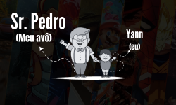
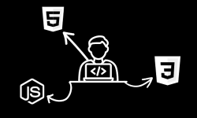

Muito Obrigado!
Obrigado por ter tirado um pouco do seu tempo e ter visto meu portfólio até aqui!
Espero que meus trabalhos tenham te cativado e que nós possamos fazer um juntos!

Seja bem-vindo ao meu portifólio!
Me chamo Yann Gabriel, e aqui você encontrará
um resumo breve sobre mim, meus trabalhos e formas de contato!


Me chamo Yann Gabriel,
moro no Estado de São Paulo
e sou apaixoando por programação desde
meus 6 anos de idade!

Essa história toda se iniciou quando
eu visitava meu avô,
sempre jogavamos juntos e,
desde lá, criei minha paixão em programar, seja
um site, jogo ou aplicativo!
Desde sempre tive muita facilidade em aprender,
na área da programação não foi diferente,
aprendi rapidamente HTML e CSS,
sabendo lidar perfeitamente com desenvolvimento Web!

Atualmente busco por trabalhos,
tanto de FreeLancers, como em empresas.
procurando por uma oportunidade
de atuar no mercado de trabalho da programação!
Trabalhei em diversos projetos de autoria própria,
cada um que contém sua peculhariedade e seu jeito único!
Abaixo não estarão todos meus projetos,
mas sim, aqueles que me apaguei e mais gostei!
Não se prenda somenteno que verá abaixo!
Para o desenvolvimento Web,
nada possui um limite!
Reproduzi uma tela de login sem a utilização de um banco de dados,
ondde nela há o cadastro de uma empresa fictícia.
Esse projeto foi feito com o intuito
de personalizar um local onde o úsuario pode acessar,
a página foi produzida com HTML e CSS somente.
-Você não conseguira enviar o formúlario!
Tudo por questões de segurança!-
Acesse ele também clicando abaixo:
Tela de Login
Nesse projeto,
procurei fazer a criação de um cardápio de restaurante interativo,
onde o usuario se encontra com um menu
divertido e harmonico.
Site feito inteiramente com CSS e HTML,
focado em estilização e interação.
Acesse ele também clicando abaixo:
Cardápio virtual
Fiz esse site sobre um dos meu jogos favoritos,
onde nele testei de forma mais aplicada
a colocação de vídeos e também foi meu primeiro dite "onlypage".
Site feito com CSS e HTML,
com as escritas sendo de punho próprio.
Acesse ele também clicando abaixo:
Site sobre The Last of Us
Aqui estão minhas redes sociais,
onde você pode descobrir mais sobre
alguns projetos ou até mesmo criar o seu!
Clicando abaixo você poderá visitar meus repositorios,
encontrando meus códigos e trabalhos!
No GitHub você encontrará
somente sites feitos para teste,
não sites oficiais que trabalhei.
No meu instagram
você encontrará todos meus sites ja feitos,
com seus códigos e peculhariedades!
No Instagram,
criamos um meio mais fácil de comunicação e aprendizados,
então já segue lá!
O meu WhatsAppé aberto somente a negociações de produções de sites!
Contanto, me chame caso queira fechar um site para você ou sua empresa!
As mensagens enviadas serão respondidas da forma mais eficaz possivel!
Obrigado por ter tirado um pouco do seu tempo e ter visto meu portfólio até aqui!
Espero que meus trabalhos tenham te cativado e que nós possamos fazer um juntos!